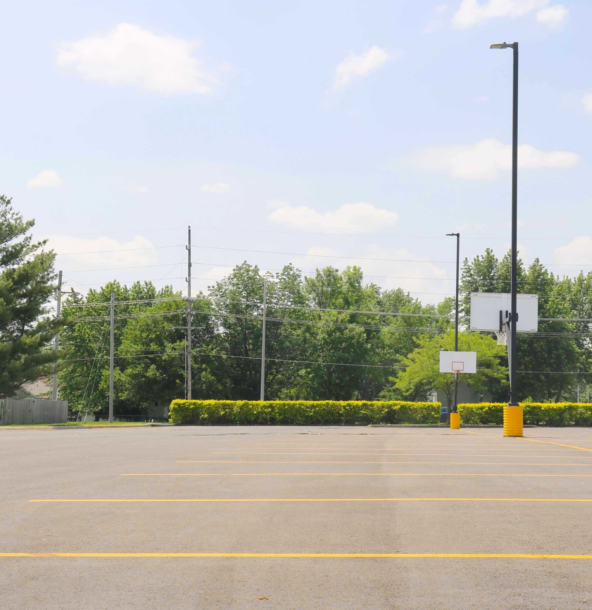
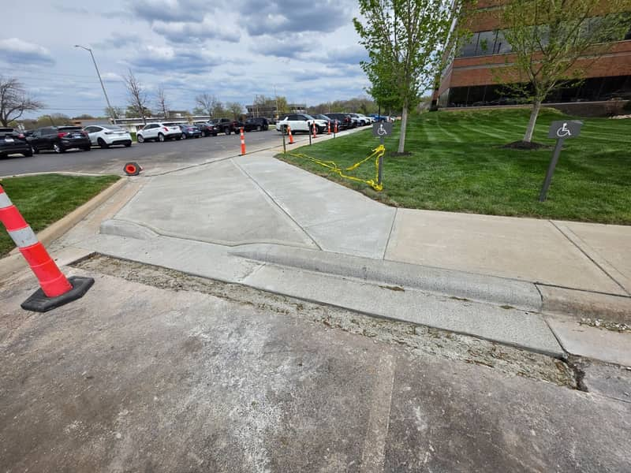
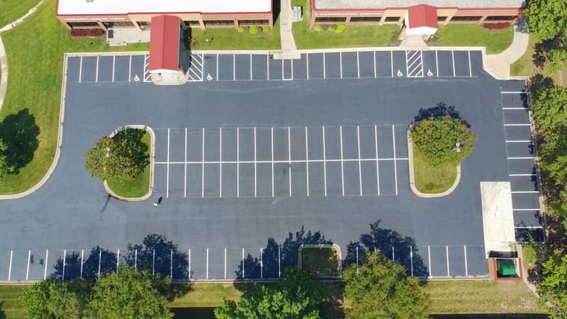
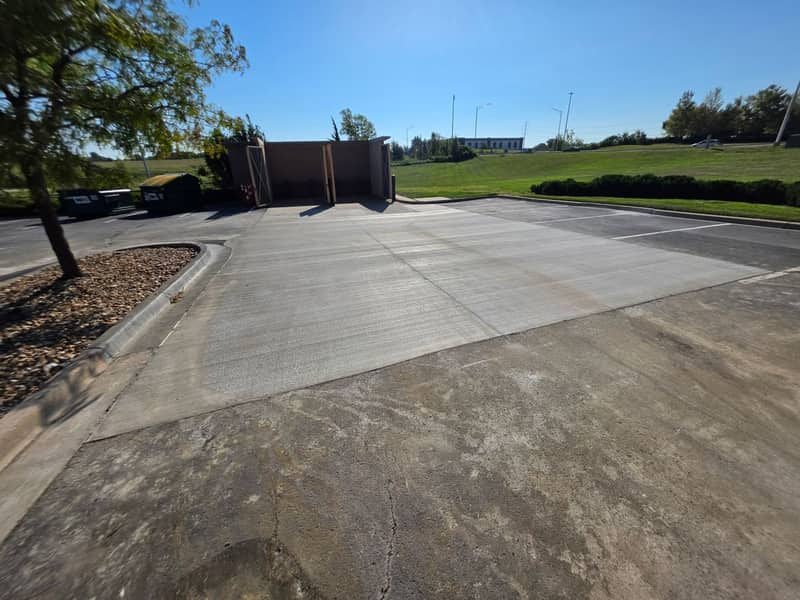
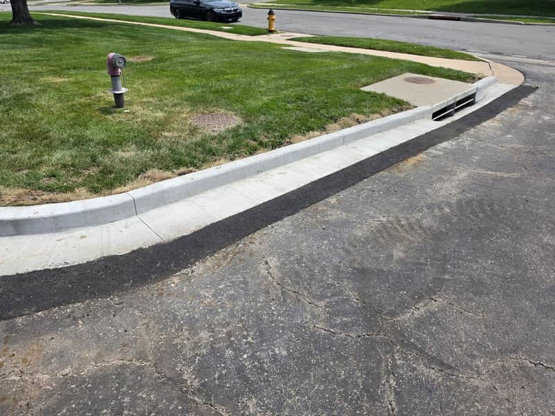
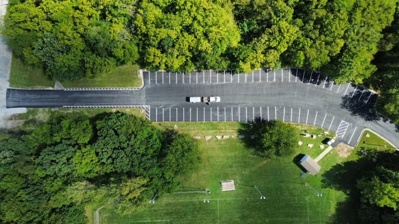
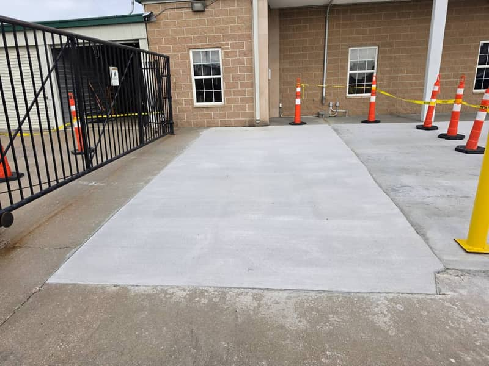
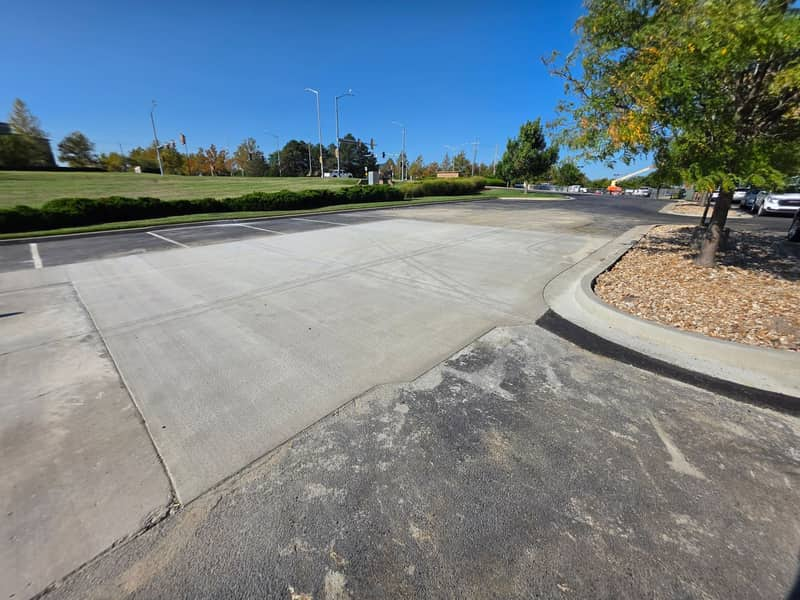
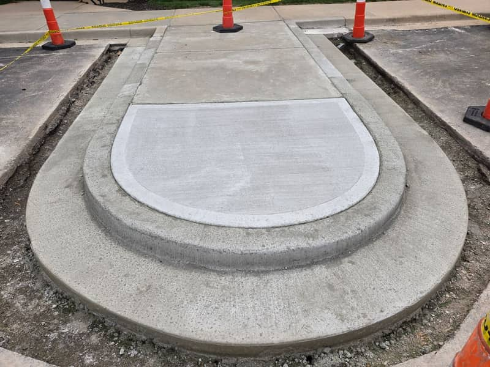

Kansas City Asphalt & Concrete Paving, Done Right the First Time.
Concrete and asphalt for commercial and residential properties across the Kansas City metro. Our own crews and equipment on every job, and a written proposal before any work starts.
Making your project our mission.
5.0 Google rating Family-owned since 2014 · Licensed & insured · One-year written guarantee
Your project. Done right. Done once.
“Making your project our mission” has been the line since the first driveway in 2014. It means the schedule we gave you is the one we work to, the crew you met stays on your job, and the finished surface is one we’d put our name on. Because we do.
We self-perform the whole job, from excavation and base work through the finished surface. You deal with one company and one contract.
About Max Paving
Concrete & asphalt, start to finish
Three trades, all in-house: the concrete, the asphalt, and the excavation underneath both.


The Max difference
Most of our work comes from repeat clients and referrals. This is why they come back.
Free Consultation
We walk the site with you, measure it, and put the full scope and price in writing. Costs you nothing.
Get a proposal 02No Salespeople
Wendell and Daniel do the estimating themselves. The person who prices your job answers for it.
Our commitment 03Our Own Crews
The people on your property work for us, not a sub we found last week. You see the same faces all project.
How we work 04A Real Guarantee
A one-year warranty on labor and workmanship, in writing. If something settles or cracks that shouldn’t, we fix it.
Read the guaranteeFrom free assessment to final walkthrough
Five steps, one company, no handoffs. Here’s what hiring us actually looks like.
- 01
Free Site Assessment
We walk the property, measure it, and talk through what you actually need.
- 02
Written Proposal
Scope, materials, and the full price in writing. We look for problems before we price, not after.
- 03
Scheduled Start
Planned around weather and your operations. If the schedule moves, you hear it from us first.
- 04
The Build
Excavation through finished surface, every phase by our own crews.
- 05
Final Walkthrough
We walk the finished work with you, and back it with a written guarantee.
Jobs we’ve finished around the metro
A few recent ones, photographed by the crew that did the work.

















Hired Max Paving a few years back to pave my driveway and pour a concrete pad for one of my buildings. I thought they did an incredible job — and what really proved it was how everything held up afterward. Both the driveway and the pad have lasted incredibly well through everything Missouri weather throws at them. No cracking, no settling, no surprises. That’s exactly why they’re the first call I made when I had more work come up. Gary and the crew did it right the first time. Highly recommend.
I’ve been working with Gary and Max Paving for 8-9 years now and I would highly recommend their services. Gary is fantastic to work with, great with customers, and his crews do fantastic work.
Max Paving was a pleasure to work with from start to finish. Their pricing was fair and straightforward. They had excellent communication from start to finish and we always knew what was happening and when. What stood out most was their willingness to do whatever it took to make sure we were happy with the results. Highly recommend.
Anywhere within 100 miles of Grain Valley
From our shop in Grain Valley, MO we work across the full Kansas City metro on both sides of the state line. Not sure if we reach you? Call (816) 220-7777. We probably do. See all locations.
Frequently asked questions
Do you offer free estimates?
Yes. Every project starts with a free site assessment: we walk the property, measure it and talk through what you need. Then you get a written proposal with the scope, materials and full price, usually within a few business days.
What areas do you serve?
We work anywhere within 100 miles of our shop in Grain Valley, MO, which covers the full Kansas City metro on both the Missouri and Kansas sides. Not sure if we reach you? Call. We probably do.
Do you do both asphalt and concrete?
Yes, plus the excavation, base and drainage underneath both. All three trades are self-performed by our own crews, so you deal with one company and one contract.
Do you handle residential work?
Yes. Driveways, sidewalks, pads and repair for homeowners, built by the same crews, with the same materials and the same written guarantee as our commercial work.
Concrete or asphalt?
Both are good when they’re built right. Concrete costs more up front and lasts longer; asphalt costs less and needs more upkeep. It depends on your budget, how long you’ll own the property and what’s under the pavement now. We’ll give you both numbers if you want the comparison.
Do you guarantee your work?
Yes. Every concrete pour and asphalt lift carries a one-year written warranty on labor and workmanship, and it goes in the proposal, not in fine print. If something settles or cracks that shouldn’t within that year, call us and we fix it.
Are you licensed and insured?
Fully licensed and insured, with certificates of insurance and vendor onboarding paperwork ready for GCs, property managers and municipalities. We work for cities that require documented proof before a truck rolls.
Have a project in mind?
We look forward to hearing about your mission, and making it possible with our services.
Request a Proposal